After user input the account and password and login in PINE, user will see the upload page.
To the upload page, user can choose the options in the Select Table.
After that, you can click and drag the data to table and upload multiple datas at the same time.
After progress bar is to 100%, this means that you have finished uploading.
If you want to download data from the database, you can select download button in the menu on the left of the page after you login. Then you’ll see the download page.
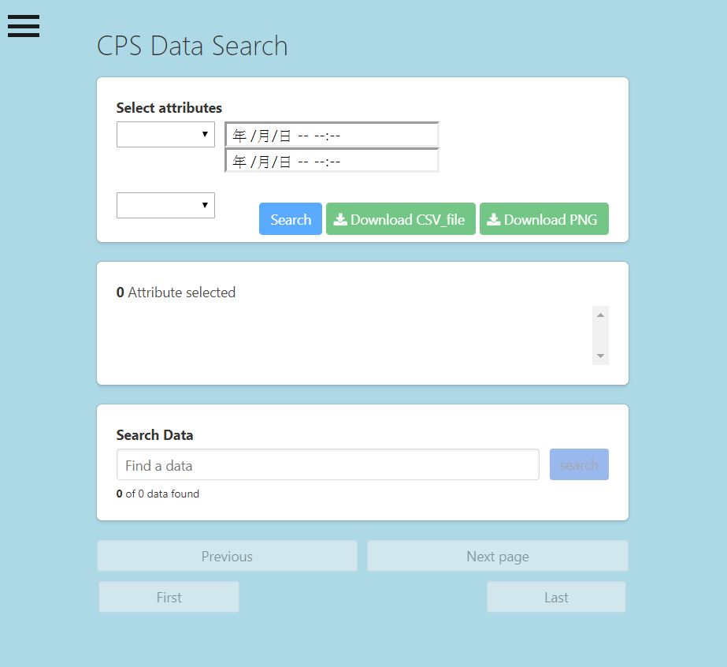First, at ‘Select attributes’ area, you need to select data you want to download and set some its attributes of it. For example, we select three attribute, Tb2, Tm2 and Time. Of course, you can push ‘X’ to delete the attribute you don’t want.
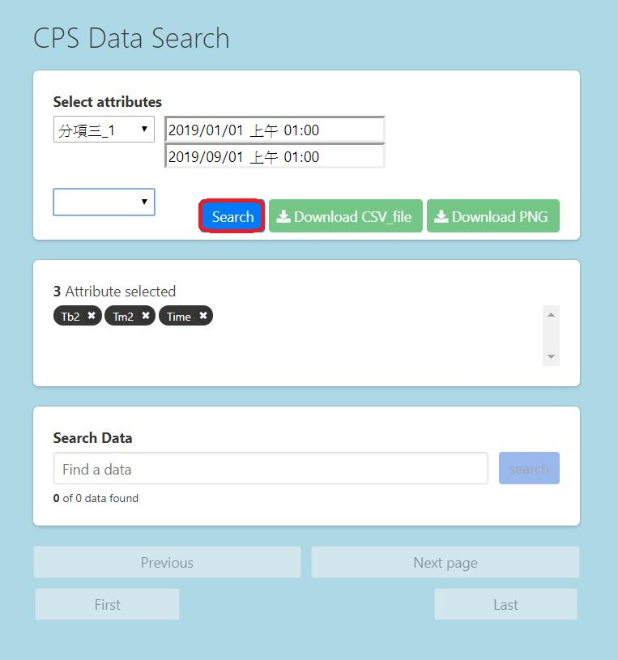Then you can push the ‘Search’ button. System will show you all selected data at the bottom.
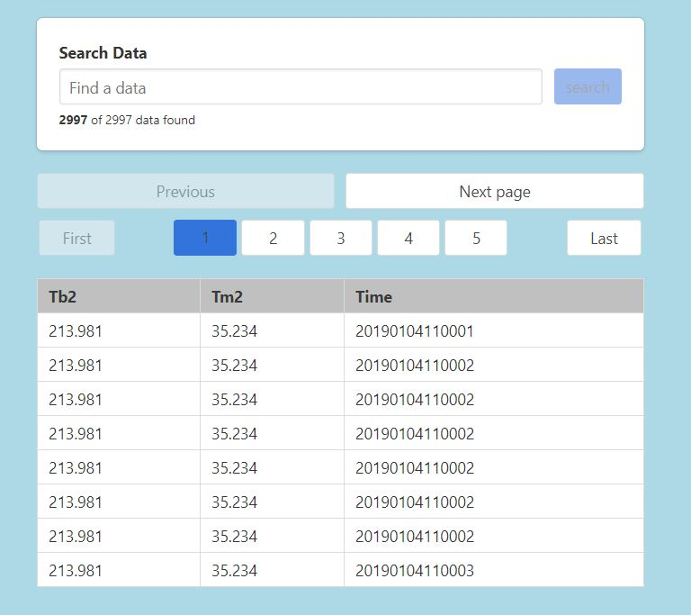At last, if there's no problem with these data, all you need to do is push the 'Download CSV_file' button and download it to your computer. If it's a picture, just push the 'DownloadPNG' button.
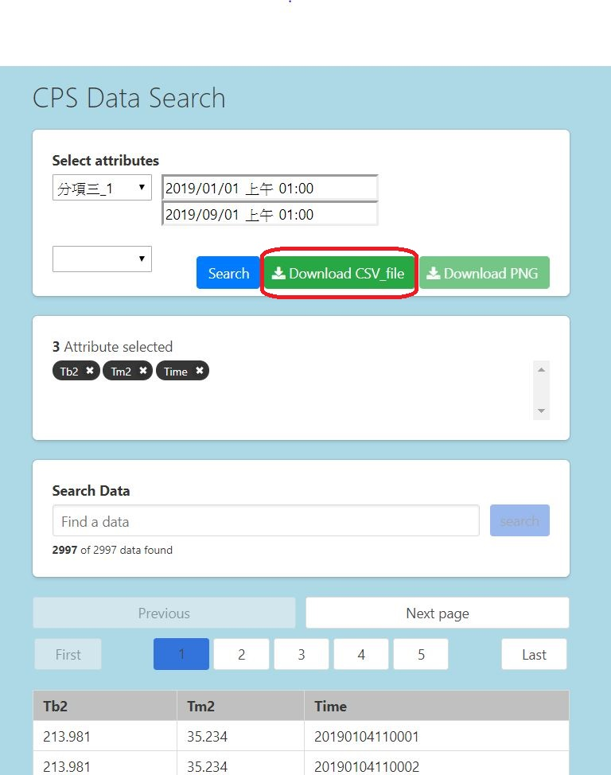Analysis
Figure 5 Contents of the meter
The analyst enters the account with password in PINE and switches to the analysis page. The interface is shown in Figure 5.
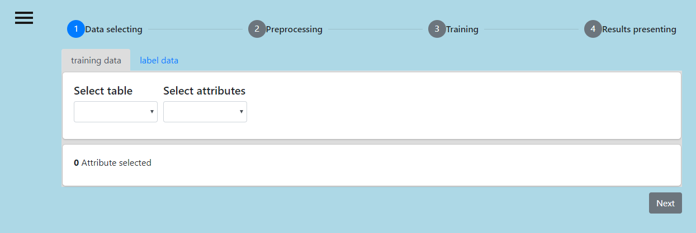Figure 6 analysis interface, is divided into four steps: “Data selecting”, “Preprocessing”, “Training”, and “Results presenting”. “Data selection” is responsible for selecting data, “Preprocessing” is responsible for data pre-processing, “Training” is responsible for data analysis, and “Resulting presenting” is responsible for displaying analysis results.
Suppose the analyst wants to use ”A相有功”,”A相視在”,”B相有功”,”B相視在”,”C相有功”,”C相視在”six parameters to predict" 總功率因數”, it is only required to select six parameters in the training data tab and press the search button. As shown in Figure 6 and Figure 7.
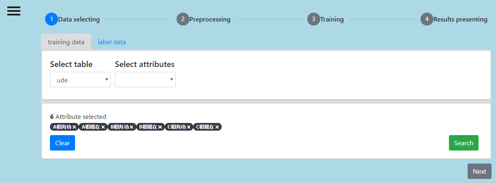Figure 7 the training data tab. The parameters selected through the “Select attributes” field are displayed at the “Attribute selected” field below. Here we choose ”A相有功”,”A相視在”,”B相有功”,”B相視在”,”C相有功”,”C相視在”.
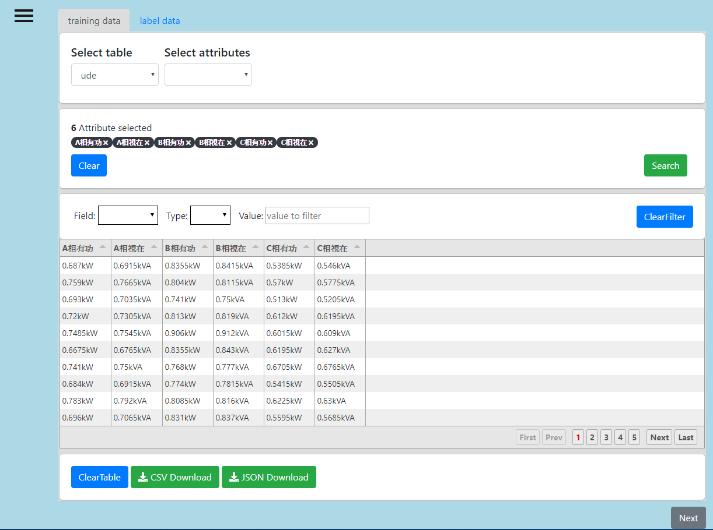Figure 8 the results of the“training data Search”. In the “Field” field, you can set the parameters (fields) to be filtered. The “Type” field can be set how the way to be filtered(greater than, less than, equal to), and the “Value” is the value to be filtered.
Then select the "總功率因數" in the “label data” tab and press the “search” button to complete the data selection, as shown in Figure 8 and Figure 9.
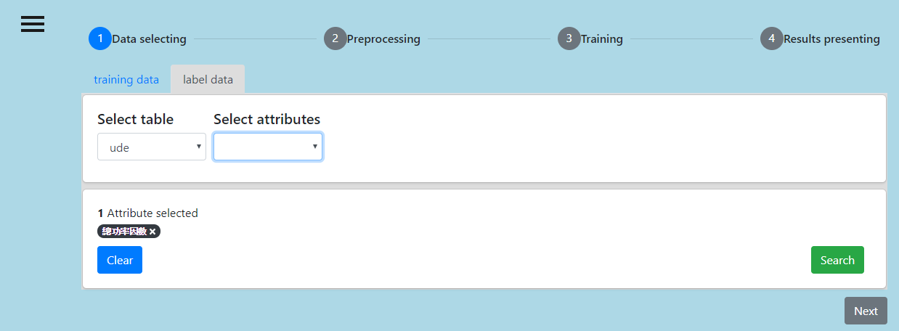Figure 9 the “label data” page. Select the total power factor here.
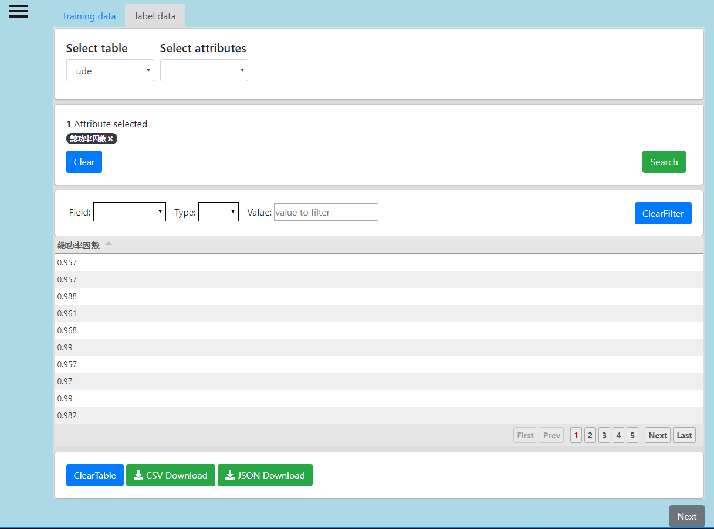Figure 10 the results of the “label data search”
Then press “Next” to the Preprocessing step. The Pre-processing interface is shown in Figure 10.
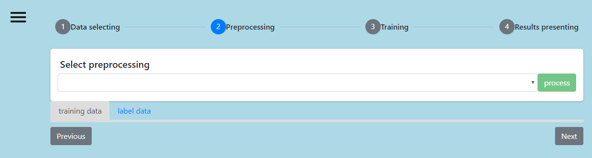Figure 11 the “Pre-processing” interface. Select the pre-processing method through the “Select pre-processing” field.
After selecting the “Normalization” method, pressing the process button. The results of the respective data after the pre-processing will be displayed. As shown in Figure 11.
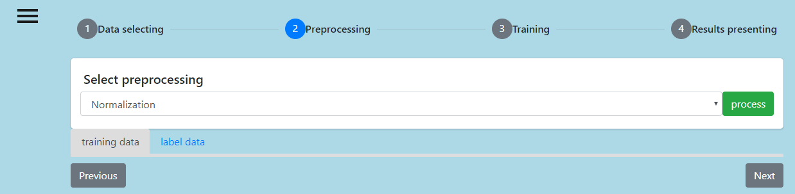Figure 12 the result of the pre-processing
Then press “Next” to the “Training” step. First, you must first set the data ratio of “train” and “validation” and what method to use for segmenting(“normal validation” and “k-ford validation”). Here you choose 6:4 and “normal validation”. After selection, the neural network category (DNN, RNN, LSTM), neural network layer (1~10), “batch_size” and “epoch” are displayed. Here select DNN, 3 layers, “batch_size”=30 and “epoch”=10. After the selection, four fields (layer + output layer) will be displayed, the first three layers can be set to “neuron_num”, “activation” and “dropout”, and the fourth layer can be set to “output_num” and “activation”. It is set to (128, relu, 0.3), ( 64, relu, 0.3), (32, relu, 0.3), (1, none) here. Finally, press the “train” button to start training the model. “Results presenting” will display the training process and results and the “download” button. After pressing the “download” button, the trained model (h5) can be downloaded.